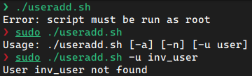
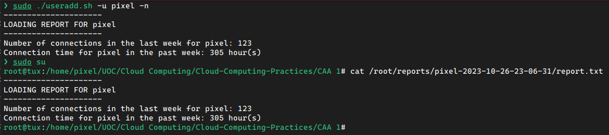
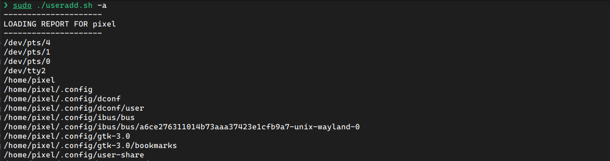

CAT 1
User & Administration level of GNU/Linux Systems
Exercise 1
a) awk
awk -F: '!($3 < 512 && $4 < 30)' /etc/passwdThe awk command is a pattern scanning and processing language. In this case, the command reads the specified file /etc/passwd and prints all the lines that match the criteria. Using the -F we specify that the separator will be a colon :, and thus we read several variables separated by colons in the file. We then apply the criteria !($3 < 512 && $4 < 30), which is a logical operator that returns false when the third variable is less than 512 and the fourth is less than 30. These variables represent the User ID (UID) and the Group ID (GID).
b) date
echo 'date +%T' > /tmp/mydate; chmod +rxs /tmp/mydate; /tmp/mydateThis command writes with echo a command to display the current time of day into a file called mydate stored in the /tmp directory. This file is then modified with chmod to allow reading, executing, and setting the current user as the user this file will run as. Then the command is ran by specifying the full path to the executable file.
c) top
- The top 10 processes that are consuming the bigger quantity of CPU.
top -b -o %CPU -n 1 | grep --color=no "PID USER" -A 10- The top 10 processes that are consuming the bigger quantity of memory.
top -b -o %MEM -n 1 | grep --color=no "PID USER" -A 10-b: runstopin batch mode, preventing any input to the command. Useful to run in a script (as is the case for the creation of this document).-o %CPU/-o %MEM: Sorts processes by highest CPU/Memory usage.-n 1: Run one iteration, instead of the default continuous output.grep --color=no "PID USER": filter results that match the text “PID USER” without coloring the matching text in the output.-A 10: retrieve the next 10 lines after the matching output. In this case the text we match is the header of the table displayed in thetopcommand.
d) Sorted files
sudo find /usr -type f -printf '%s %p\n' | sort -nr \
| head -n 24 | awk '{print $2, $1/1024/1024 " MB"}'sudo: required to search everywhere inside/usr, since some folders don’t have read permissions for regular users.find /usr -type f: finds all files inside the/usrdirectory, including subdirectories.-fprintf '%s %p\n': prints resulting files in the string format specified, i.e. indicating both the size and path of the file found by thefindcommand.sort -nr: sorts the result numerically (by file size) in reverse order (largest to smallest).head -n 24: retrieve the top24lines from the previous output.awk '{print $2, $1/1024/1024 "MB"}': modifies the previous output printing first the second variable (default variable separator forawkis), and then the first, converted to MB (from bytes):
e) Executable files
sudo find /usr -type f -executable -printsudo: required to search everywhere inside/usr, since some folders don’t have read permissions for regular users.find /usr -type f: finds all files inside the/usrdirectory, including subdirectories.-executable: prints all files that are executable.-print: show the full path to the executable file.
f) User management
#!/bin/bash
# Remove the `tux` user if already created (this is a test user,
# so it is okay to delete it)
grep "tux" /etc/passwd 1>/dev/null && sudo userdel tux
# Get the last created user's id
userid=$(tail -1 /etc/passwd | awk -F: '{print $3}')
# Set the next user id as the previous + 1
new_userid=$((userid + 1))
# Get the last created group's id
gid=$(tail -1 /etc/group | awk -F: '{print $4}')
# Set the next group id as the previous + 1
new_gid=$((gid + 1))
# Check that the new userid is less than `2048` and exit if necessary
if [ $new_userid -ge 2048 ]; then
echo "Error: UID reached 2048" >&2
exit 1
fi
# Create the `users` group only when it does not exist (with the new group id)
! grep "users" /etc/group 1>/dev/null && groupadd -g $new_gid users
# Create the `tux` user with the new user id, added to the `users`
# group by default
sudo useradd -u $new_userid -g users tuxg) Report generation
Code
#!/bin/bash
# Main Function
user_activity() {
echo "---------------------"
echo "LOADING REPORT FOR $1"
echo "---------------------"
# Checks if option -n is present
if [ $2 -eq 1 ]; then
# Lists last connections in the past week, filters the current user,
# and counts the lines in the output
echo "Number of connections in the last week for $1: $(last -w \
| grep "$1" | wc -l)"
# Does the same as before, but calculates the login time and sums it
echo "Connection time for $1 in the past week: $(last -w | grep "$1" \
| awk '{print $(NF)}' | grep -v "+\|-\|in" | tr -d "()" \
| awk '{sum += $1+$2/60} END {print sum}') hour(s)"
fi
# Checks if option -a is present
if [ $3 -eq 1 ]; then
# Finds all files for the current user modified in the last day
sudo find / -user $1 -mtime -1
fi
}
# Checks that script is run as root
if [[ $(whoami | grep 'root') != "root" ]]; then
echo "Error: script must be run as root" && exit 1
fi
# Checks that script is run with some arguments
if [[ $# -eq 0 ]]; then
echo "Usage: $0 [-a] [-n] [-u user]"
exit 1
fi
# Lists real users in the system (uid >= 1000 excluding user 'nobody')
users=$(awk -F: '$3 >= 1000 && $1 != "nobody" {print $1}' /etc/passwd)
# Set default value for options
n=0
a=0
# Set options, with -u requiring an argument
while getopts "u:na" opt; do
case $opt in
u)
# Set users list to just the one user in the list, and ensure it exists
users=${OPTARG}
if ! id "$users" &>/dev/null; then
echo "User $users not found" && exit 1
fi;;
n)
n=1;;
a)
a=1
esac
done
# Loop over user list, create report directory (if necessary) and save
# all output to a file (also printed on console output)
for user in $users
do
report_dir="/root/reports/$user-$(date '+%Y-%m-%d-%H-%M-%S')"
mkdir -p "$report_dir"
user_activity $user $n $a 2>&1 | tee -a "$report_dir/report.txt"
doneScreenshots



This is merely a fragment of the code. The system has modified too many files in the past 24 hours to be displayed here.
h) Package manager
i) Installed Packages
dpkg --listii) Packages to Update
apt updateiii) Package a command belongs to
dpkg -S <cmd>iv) Package information
apt-cache show <package-name>v) Find package and version from keyword
apt-cache show <package-name>